Будівельне та промислове обладнання
ТОВ «ЭКВИПТЕХ», Дніпро, Україна
Электронная почта: info@ekvipteh.com.ua
| Головна | Про компанію | Продукція | Контакти |
| Оборудование |
 СТРІЧКОВИЙ ТРАНСПОРТЕР  НОРІЯ ВЕРТИКАЛЬНА КОВШОВА  ТРАНСПОРТЕР ЛАНЦЮГОВИЙ СКРЕБКОВИЙ  СТРІЧКОВИЙ ТРАНСПОРТЕР ЖОЛОБЧАСТОГО ТИПУ СТРІЧКОВИЙ ТРАНСПОРТЕР З МЕХАНІЧНОЮ ЗМІНОЮ ВИСОТИ 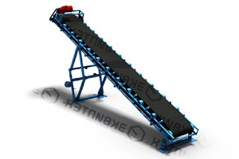 СТРІЧКОВО-КОВШОВИЙ ТРАНСПОРТЕР З РЕГУЛЮВАННЯМ КУТА НАХИЛУ 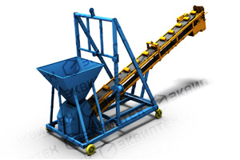 СТРІЧКОВО-КОВШОВИЙ ТРАНСПОРТЕР 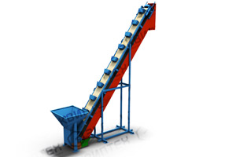 СТРІЧКОВИЙ ТРАНСПОРТЕР ДЛЯ ПРИВАТНОЇ ПТАХОФАБРИКИ 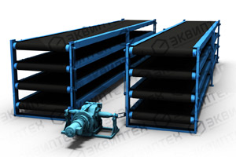 СТРІЧКОВІ ТРАНСПОРТЕРИ ДЛЯ ХАРЧОВОЇ ПРОМИСЛОВОСТІ 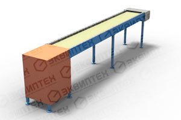 СТРІЧКОВІ ТРАНСПОРТЕРИ ДЛЯ ХАРЧОВОЇ ПРОМИСЛОВОСТІ 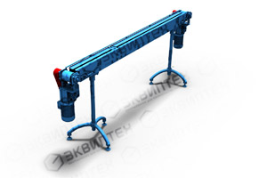 СТРІЧКОВИЙ ТРАНСПОРТЕР-ДОЗАТОР 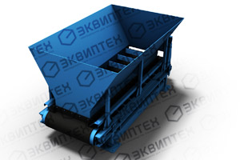 СТРІЧКОВИЙ ТРАНСПОРТЕР ПРЯМИЙ З ГІДРАВЛІЧНИМ ПІДЙОМОМ 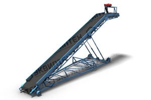 ШНЕКОВИЙ КОНВЕЄР 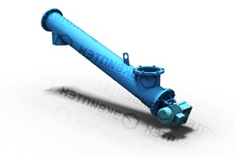 ШНЕКОВИЙ КОНВЕЄР 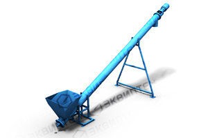 ШНЕКОВИЙ КОНВЕЄР 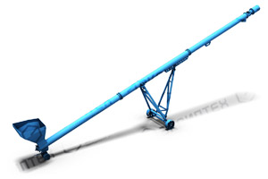 ШНЕКОВИЙ КОНВЕЄР ДЛЯ СІЛЬГОСП КУЛЬТУР 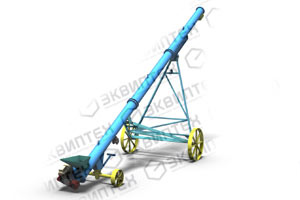 ПОСЛУГИ РЕМОНТУ ЗЕРНОВИХ ШНЕКІВ 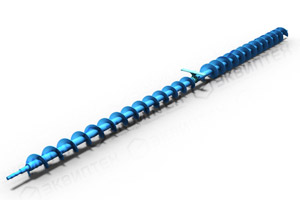 ПОСЛУГИ РЕМОНТУ ЗЕРНОВИХ ШНЕКІВ 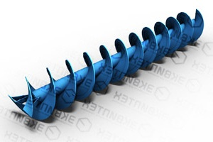 ШНЕКОВИЙ КОНВЕЄР 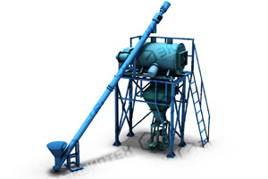 ШНЕКОВИЙ КОНВЕЄР 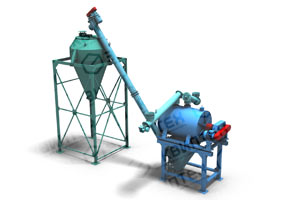 ШНЕКОВИЙ КОНВЕЄР 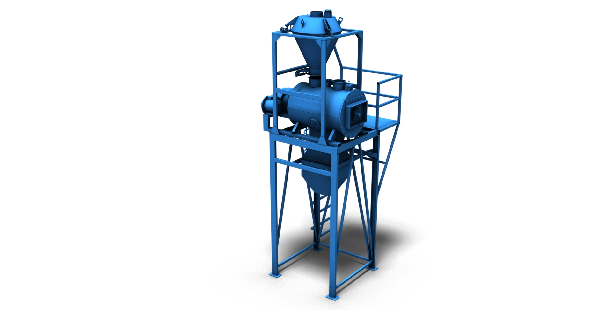 ЛІНІЇ ВИРОБНИЦТВА ТА ФАСУВАННЯ СУХИХ БУДІВЕЛЬНИХ СУМІШЕЙ 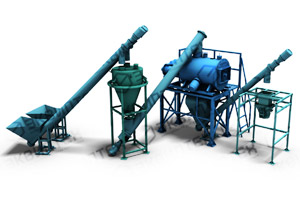 ЛІНІЇ ВИРОБНИЦТВА ТА ФАСУВАННЯ СУХИХ БУДІВЕЛЬНИХ СУМІШЕЙ 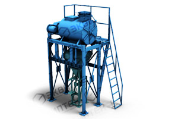 ЛІНІЇ ВИРОБНИЦТВА ТА ФАСУВАННЯ СУХИХ БУДІВЕЛЬНИХ СУМІШЕЙ 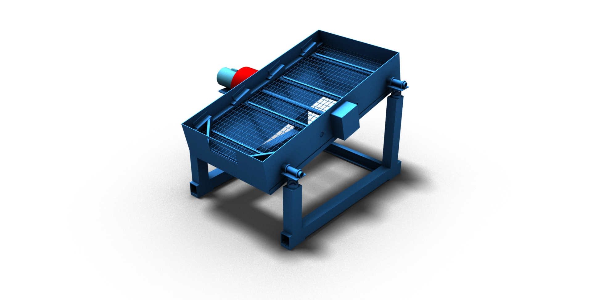 ЛІНІЇ ВИРОБНИЦТВА ТА ФАСУВАННЯ СУХИХ БУДІВЕЛЬНИХ СУМІШЕЙ 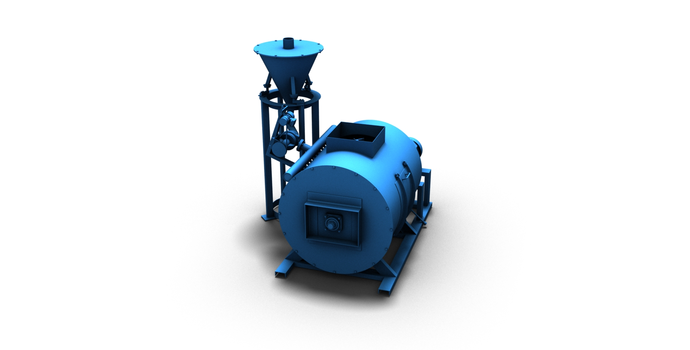 ЛІНІЇ ВИРОБНИЦТВА ТА ФАСУВАННЯ СУХИХ БУДІВЕЛЬНИХ СУМІШЕЙ 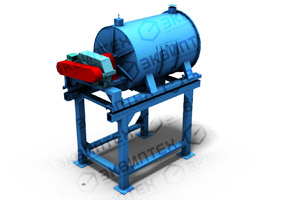 ПРОСІЮВАННЯ МАТЕРІАЛУ 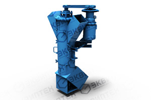 ЗМІШУВАЧ ДЛЯ СУХИХ БУДІВЕЛЬНИХ СУМІШЕЙ 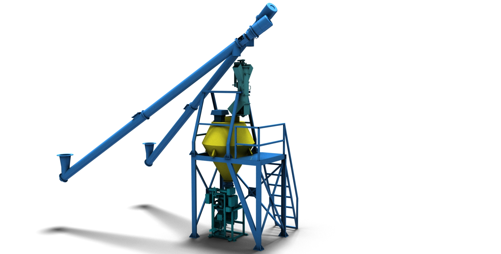 ЗМІШУВАЧ ДЛЯ СУХИХ БУДІВЕЛЬНИХ СУМІШЕЙ 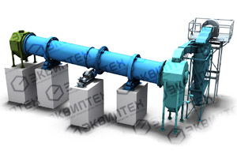 ЗМІШУВАЧ БЕЗПЕРЕРВНОЇ ДІЇ 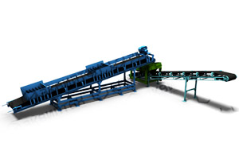 ЗМІШУВАЧ БЕЗПЕРЕРВНОЇ ДІЇ 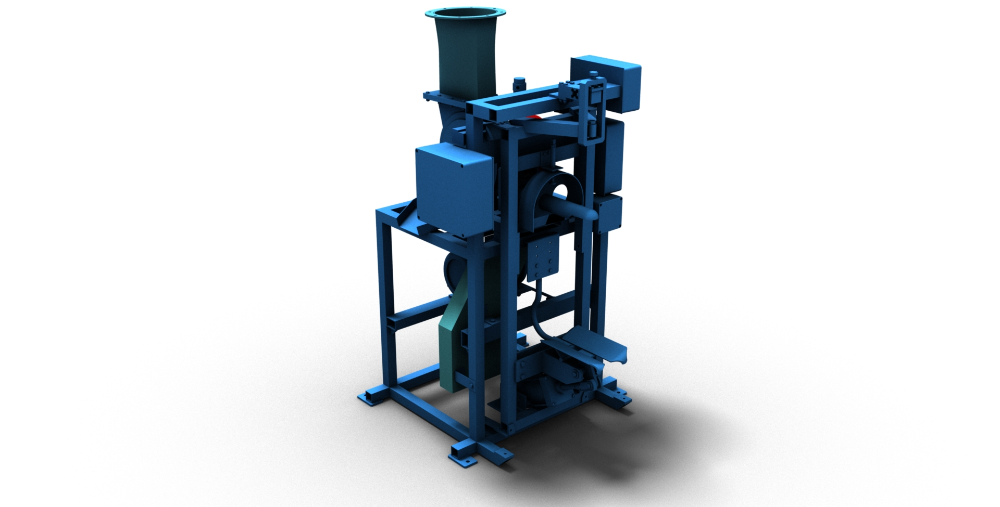 СУШАРНИЙ КОМПЛЕКС БАРАБАННОГО ТИПУ 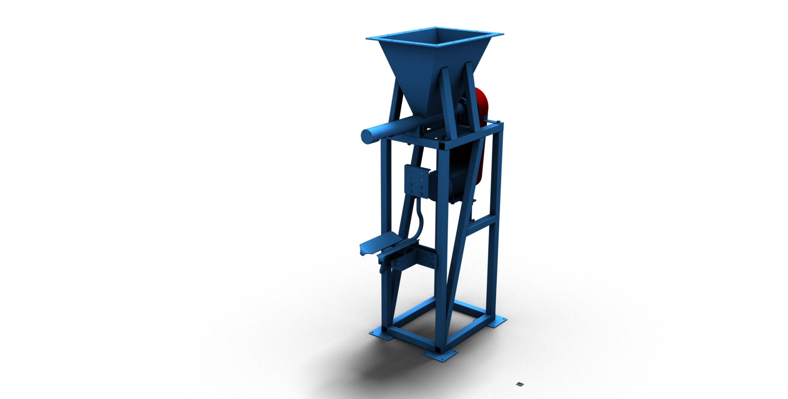 ОБЛАДНАННЯ ДЛЯ ВИРОБНИЦТВА ШЛАКОБЛОКУ, ПЛИТКИ, БРИКЕТІВ 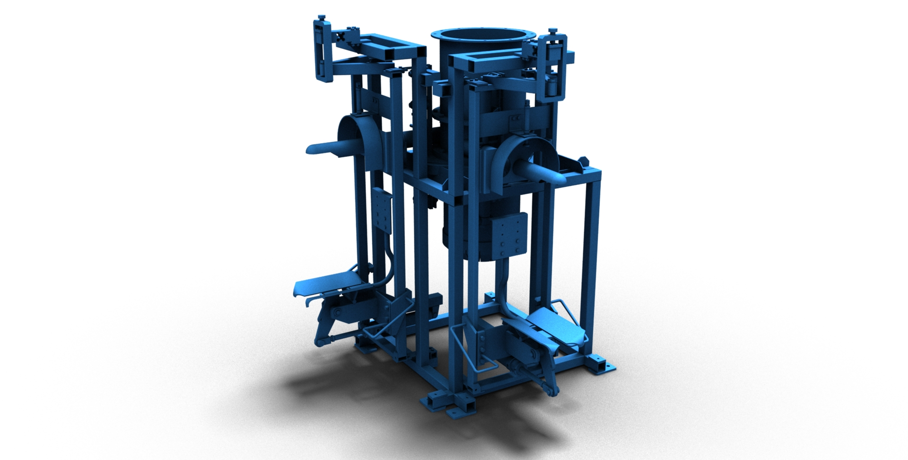 СИСТЕМА ДОЗУВАННЯ ТА ФАСУВАННЯ ПІСКУ 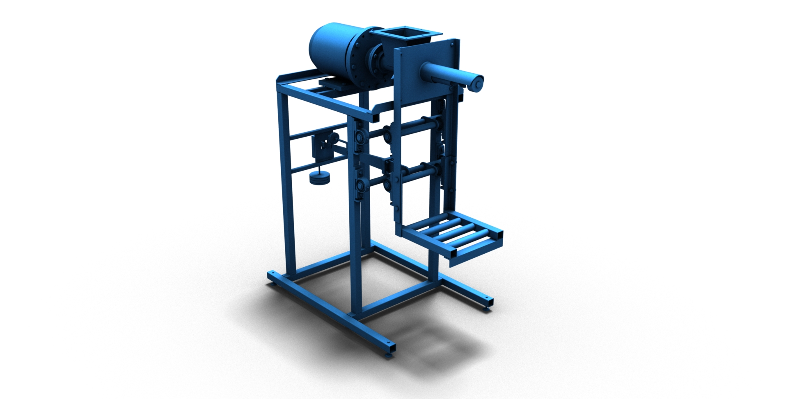 СИСТЕМА ДОЗУВАННЯ ТА ФАСУВАННЯ ПІСКУ 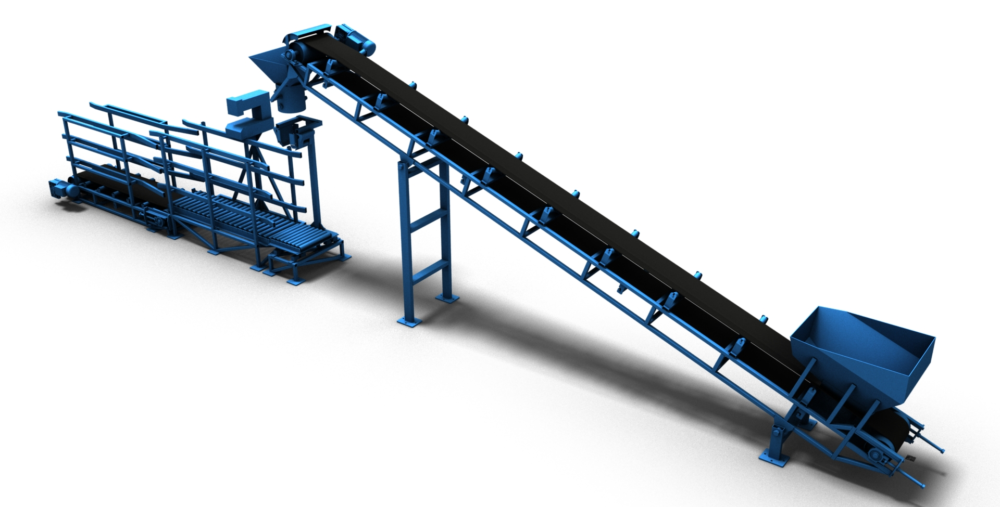 СИСТЕМА ДОЗУВАННЯ ТА ФАСУВАННЯ ПІСКУ 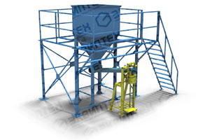 СИСТЕМА ДОЗУВАННЯ ТА ФАСУВАННЯ ПІСКУ 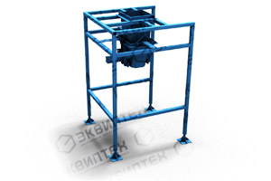 СИСТЕМА ДОЗУВАННЯ ТА ФАСУВАННЯ ПІСКУ 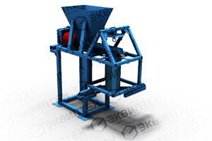 СИСТЕМА ДОЗУВАННЯ ТА ФАСУВАННЯ ПІСКУ 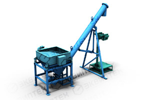 СИСТЕМА ДОЗУВАННЯ ТА ФАСУВАННЯ ПІСКУ 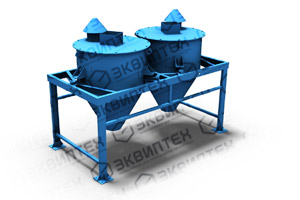 СИСТЕМА ДОЗУВАННЯ ТА ФАСУВАННЯ ПІСКУ 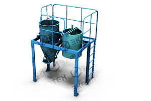 СИСТЕМА ДОЗУВАННЯ ТА ФАСУВАННЯ ПІСКУ 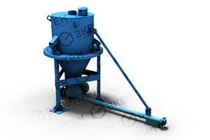 СТРІЧКОВИЙ ТРАНСПОРТЕР-ДОЗАТОР 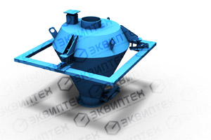 СТРІЧКОВИЙ ТРАНСПОРТЕР-ДОЗАТОР 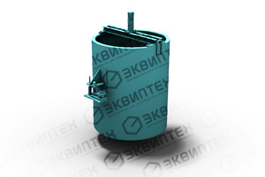 СТРІЧКОВИЙ ТРАНСПОРТЕР-ДОЗАТОР 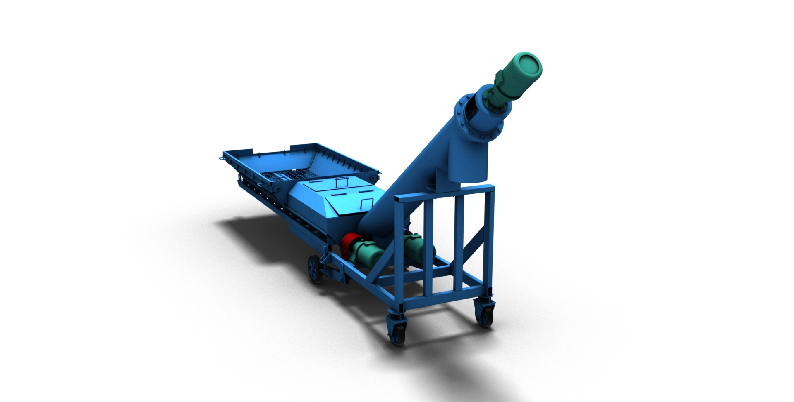 СТРІЧКОВИЙ ТРАНСПОРТЕР-ДОЗАТОР 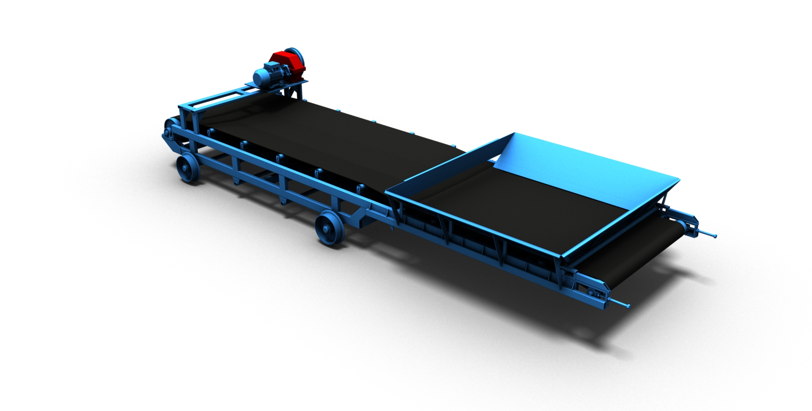 СТРІЧКОВИЙ ТРАНСПОРТЕР-ДОЗАТОР 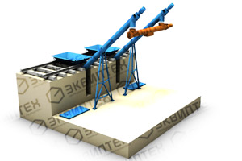 МОБІЛЬНИЙ РОЗВАНТАЖУВАЧ ВАГОНІВ 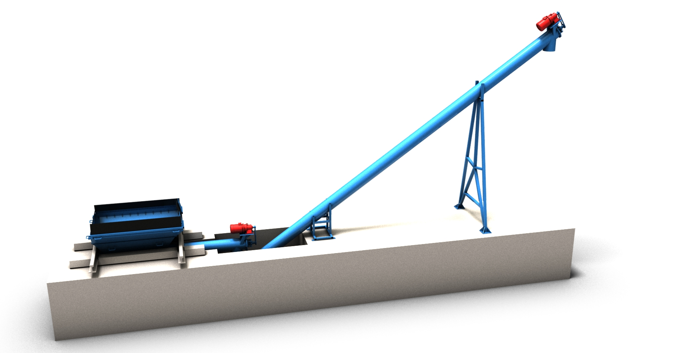 ТРАНСПОРТЕР-РОЗВАНТАЖУВАЧ ВАГОНІВ 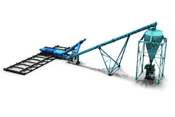 РІШЕННЯ ДЛЯ ЗАВАНТАЖЕННЯ ЦЕМЕНТУ 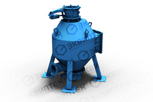 РІШЕННЯ ДЛЯ ЗАВАНТАЖЕННЯ ЦЕМЕНТУ 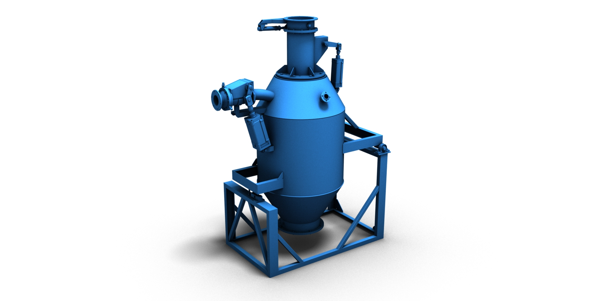 РІШЕННЯ ДЛЯ ЗАВАНТАЖЕННЯ ЦЕМЕНТУ 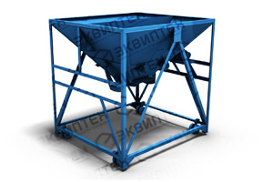 ПНЕВМОКАМЕРНІ НАСОСИ ДЛЯ ЦЕМЕНТУ 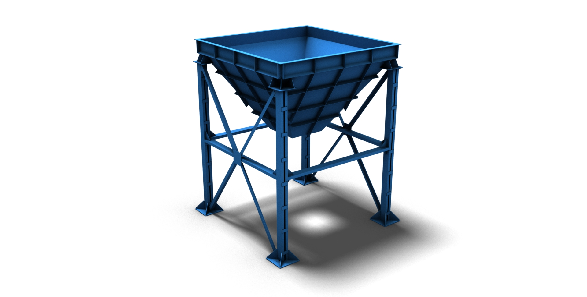 ПНЕВМОКАМЕРНІ НАСОСИ ДЛЯ ЦЕМЕНТУ 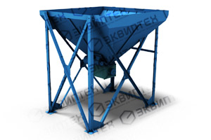 СКЛАДИ ПІСКУ (ІНЕРТНИХ) СКЛАДИ ПІСКУ (ІНЕРТНИХ) СКЛАДИ ПІСКУ (ІНЕРТНИХ) СКЛАДИ ПІСКУ (ІНЕРТНИХ) |